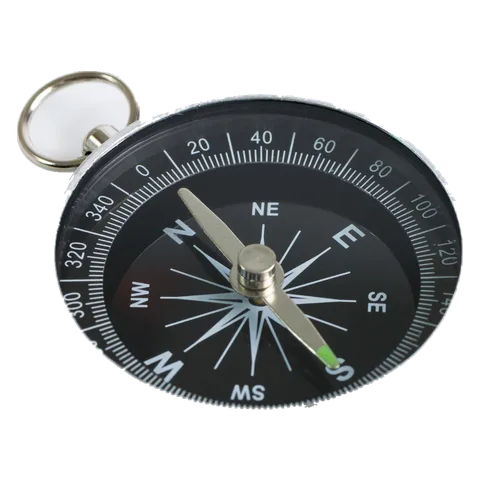
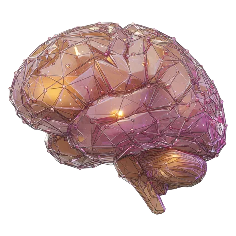
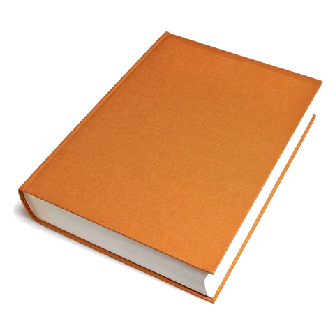
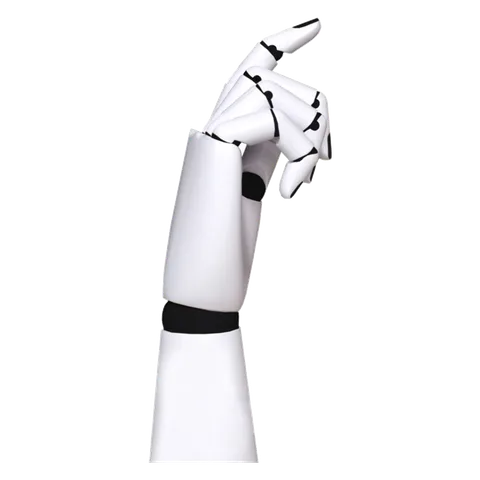

Um agente de IA que trabalha com você.
No Agente 01, você monta no Claude, sem programar, um agente que lê seu e-mail, confere sua agenda e te entrega o que importa, na hora que você escolher. Ele agiliza o seu dia; quem decide é você. Aulas de 2 a 4 minutos.
Curso gratuito. Leva 20 segundos, e assim que o curso sair você recebe o link de inscrição.
O Academy
Uma escola nova, do Instituto Evereste.
O Evereste Academy é a plataforma de cursos do Instituto Evereste. Ele estreia com um curso de IA aplicada ao trabalho, aberto à equipe do Instituto e ao público.
- Curso 01Agente 01, de IA
- R$ 0Curso gratuito
- VitalícioAcesso para sempre
- 1º dezEstreia do curso
Como é na prática
“Eu uso um agente assim todo dia. Ele se chama Zenith. De manhã, ele lê meu e-mail, minha agenda e minhas tarefas e me manda o dia resumido: o que vence hoje, o que espera resposta e o primeiro passo. Eu leio em 1 minuto. No Agente 01, você monta o seu.”
Marllon Costa
Criador do curso Agente 01
Bom dia. Seu dia em 1 minuto.
- Vence hoje
- Relatório mensal, até as 17h
- Espera resposta
- 2 e-mails de fornecedores
- Na agenda
- Reunião de equipe às 9h
- Primeiro passo
- Responder o orçamento antes da reunião
Sobre o curso
Chat não é agente.
No chat, você pergunta, espera e explica tudo de novo amanhã. O agente você monta uma vez, e ele trabalha com você todo dia. Ele tem quatro coisas que o chat não tem.
- Sabe quem você éVocê não explica tudo de novo.
- Abre seu e-mail e sua agendaVocê não copia e cola nada.
- Segue a mesma receitaO resultado sai igual todo dia.
- Tem hora marcadaTrabalha antes de você chegar.
Método 6M
As seis peças de um agente.
É o que você monta no curso, uma peça por módulo.
Missão
O que ele faz por você, em uma frase.
Sem missão, ele se perde.

Mente
As instruções: quem ele é e como ele fala.
Sem mente, ele não sabe quem é.

Memória
Tudo o que ele precisa saber sobre você.
Sem memória, ele é genérico.

Mãos
Os conectores: e-mail, agenda, arquivos.
Sem mãos, ele não vê o seu e-mail nem a sua agenda.

Método
A receita que ele repete igual, todo dia.
Sem método, cada dia sai de um jeito.
Momento
A hora em que ele trabalha sozinho.
Sem momento, ele espera você.
Faltou uma peça, o agente quebra.
Para quem é
É para você?
É para você se
- já usa IA no trabalho
- não programa
- perde tempo organizando e-mail, agenda e tarefas
Não é para você se
quer um robô que decide sozinho. Aqui, a IA faz e quem decide é você.
Quem ensina
Marllon Costa.
Estuda e aplica inteligência artificial desde 2021. No Instituto Evereste, chefia a Seção de Marketing e Publicidade e criou os plugins de IA usados pela equipe. No dia a dia, trabalha com o Zenith, o agente que ele mesmo montou.
- Desde 2021Estudando e aplicando IA
- ZenithO agente que ele usa todo dia
- Plugins de IAEm uso no Instituto Evereste
- 5 anosDe tráfego pago
Perguntas frequentes
Antes de se inscrever.
É de graça mesmo?
Sim. R$ 0, com acesso vitalício.
Onde vou assistir?
No Evereste Academy, em evereste.academy. Assim que o curso sair, o link de inscrição chega no seu e-mail e no seu WhatsApp.
Preciso saber programar?
Não. Você monta tudo conversando com o Claude.
Preciso de alguma conta?
Uma conta no Claude. Conectar e-mail e agenda e deixar o agente rodar num horário fixo podem exigir um plano pago do Claude.
E meus e-mails?
Você escolhe o que o agente acessa e pode desconectar quando quiser.
Quanto tempo leva?
Aulas de 2 a 4 minutos, uma peça por módulo.
Pré-inscrição · Curso 01
Entre na lista do Agente 01.
O Agente 01 estreia no Evereste Academy em 1º de dezembro. Faça a pré-inscrição: assim que o curso sair, você é avisado e recebe o link para se inscrever.
- Curso gratuito, com acesso vitalício
- Uma peça por módulo, em aulas de 2 a 4 minutos
- Sem programar: você monta conversando com o Claude
Pré-inscrição feita.
Assim que o curso sair, você recebe o link de inscrição no seu e-mail e no seu WhatsApp.
Conhece alguém que perde a manhã no e-mail? Mande esta página para essa pessoa.
Mandar pelo WhatsAppEnquanto o curso não estreia, leia o ebook Método 6M e já rascunhe o seu agente.